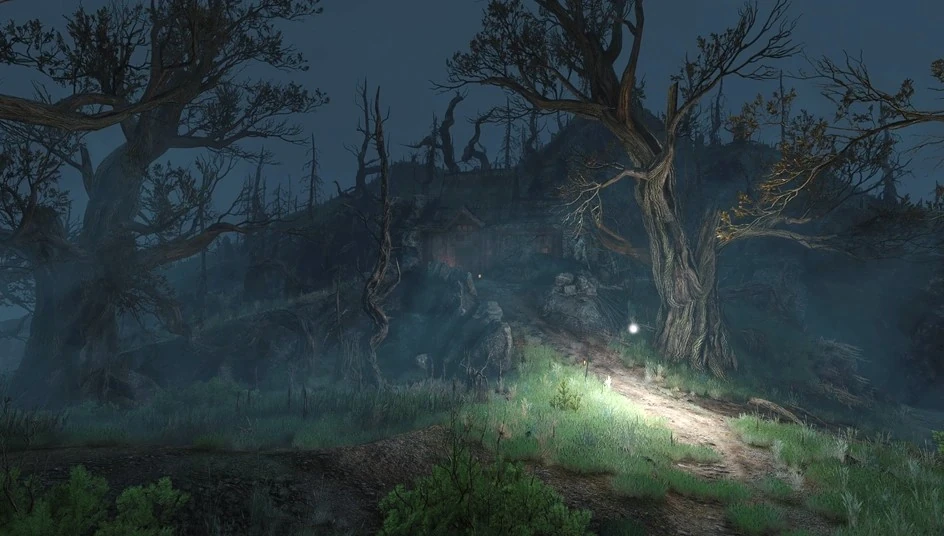
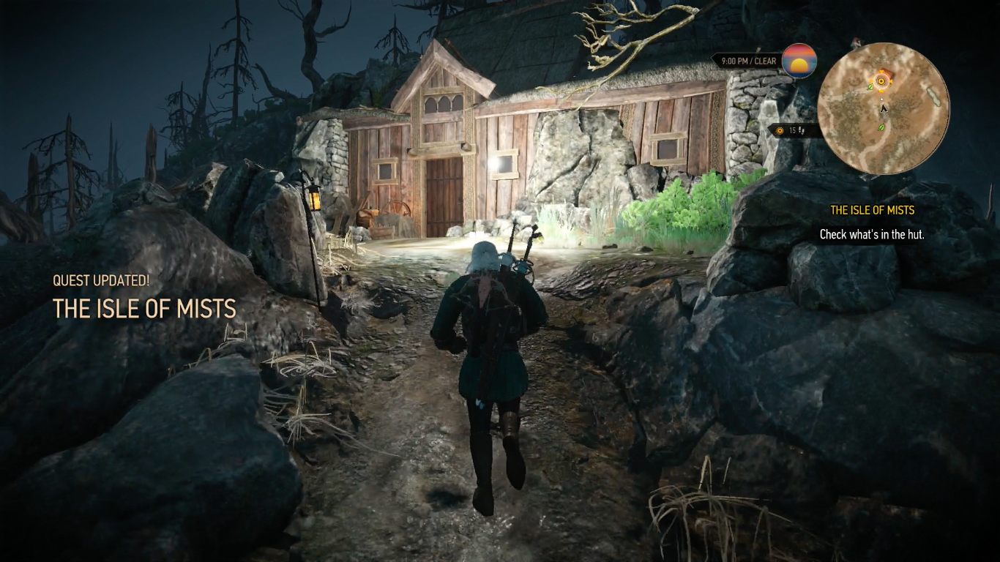

Ostrov mlh (The Isle of Mists) je jednou z nejzáhadnějších, nejatmosféričtějších a emočně nejvypjatějších lokací v celé hře Zaklínač 3: Divoký hon. Nejedná se o běžně přístupnou herní oblast - je to skryté, magické místo, kam se Geralt vydává v rámci hlavní dějové linie, což představuje hlavní zlomový bod celé hry. Ostrov mlh se nachází mimo běžné mapy a je chráněn mocnou iluzí a neprostupnou magickou mlhou. Legenda praví, že kdo na ostrov vstoupí, už se nikdy nevrátí. Ostrov působí strašidelně, melancholicky a opuštěně. Krajinu tvoří pokroucené stromy, skaliska, vraky ztroskotaných lodí a všudypřítomná hustá mlha, která omezuje viditelnost. Jakmile Geralt zjistí od Umy/Avallac'ha, že Ciri je ukrytá právě zde, musí se na ostrov vydat lodí ze Skellige. Když Geralt dorazí na břeh ostrova, světluška ho dovede k osamělé chatrči. Uvnitř se skrývá skupina sedmi trpaslíků, kteří zde ztroskotali (což je přímá a vtipná reference na pohádku o Sněhurce). Po splnění trpasličích úkolů, Geralt konečně nalezne Ciri.
